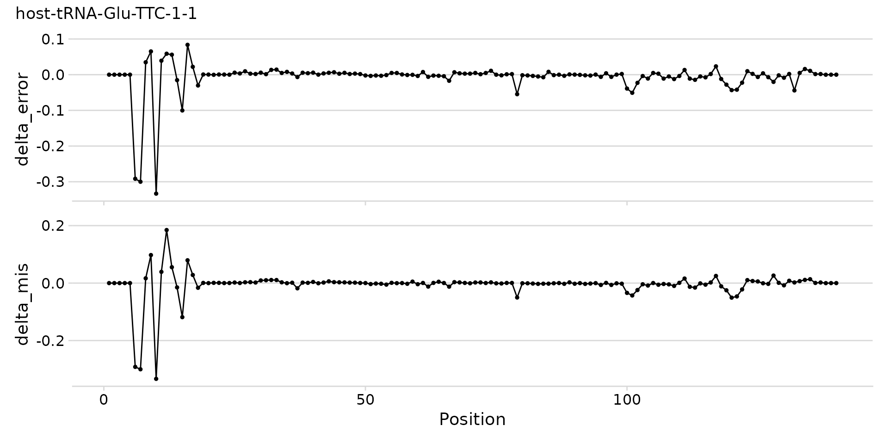
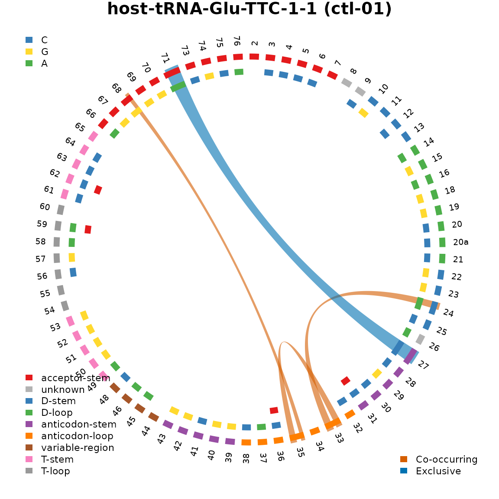
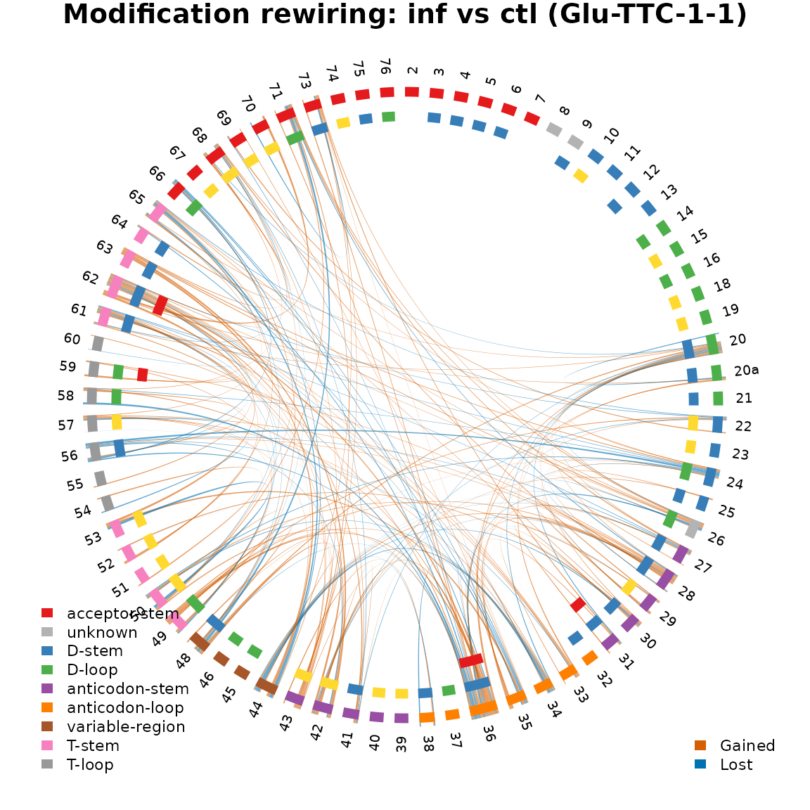

Overview
This vignette demonstrates clover’s analysis workflow using E.
coli tRNA sequencing data from a T4 phage infection time-course
experiment. The test dataset includes 6 samples: 3 uninfected controls
(ctl) and 3 T4-infected (inf) wild-type E.
coli at 15 minutes post-infection, with 3 biological replicates per
condition.
Loading data with create_clover()
The simplest way to load results from the aa-tRNA-seq-pipeline
is with create_clover(), which reads a pipeline
configuration file and assembles a
SummarizedExperiment.
config_path <- clover_example("ecoli/config.yaml")
sample_info <- data.frame(
sample_id = c(
"wt-15-ctl-01",
"wt-15-ctl-02",
"wt-15-ctl-03",
"wt-15-inf-01",
"wt-15-inf-02",
"wt-15-inf-03"
),
condition = rep(c("ctl", "inf"), each = 3),
replicate = rep(1:3, 2)
)
se <- create_clover(
config_path,
types = c("charging", "bcerror", "odds_ratios"),
sample_info = sample_info
)
se
#> class: SummarizedExperiment
#> dim: 190 6
#> metadata(5): config charging bcerror odds_ratios fasta
#> assays(1): counts
#> rownames(190): host-tRNA-Ala-GGC-1-1 host-tRNA-Ala-GGC-1-1-uncharged
#> ... phage-tRNA-Thr-TGT phage-tRNA-Thr-TGT-uncharged
#> rowData names(2): ref seq_length
#> colnames(6): wt-15-ctl-01 wt-15-ctl-02 ... wt-15-inf-02 wt-15-inf-03
#> colData names(3): sample_id condition replicateThe SE object contains:
- assay “counts”: abundance count matrix (charged + uncharged reads)
- colData: sample metadata with condition labels
- metadata: list with raw charging data, bcerror, odds ratios, FASTA reference, and pipeline config
SummarizedExperiment::assay(se, "counts")[1:5, ]
#> wt-15-ctl-01 wt-15-ctl-02 wt-15-ctl-03
#> host-tRNA-Ala-GGC-1-1 298 397 113
#> host-tRNA-Ala-GGC-1-1-uncharged 4393 5014 883
#> host-tRNA-Ala-GGC-1-2 1625 1506 265
#> host-tRNA-Ala-GGC-1-2-uncharged 4391 5130 862
#> host-tRNA-Ala-TGC-1-1 518 610 160
#> wt-15-inf-01 wt-15-inf-02 wt-15-inf-03
#> host-tRNA-Ala-GGC-1-1 189 347 1253
#> host-tRNA-Ala-GGC-1-1-uncharged 3640 7133 12837
#> host-tRNA-Ala-GGC-1-2 1299 1857 4409
#> host-tRNA-Ala-GGC-1-2-uncharged 3637 7411 12592
#> host-tRNA-Ala-TGC-1-1 233 553 1706
SummarizedExperiment::colData(se)
#> DataFrame with 6 rows and 3 columns
#> sample_id condition replicate
#> <character> <character> <integer>
#> wt-15-ctl-01 wt-15-ctl-01 ctl 1
#> wt-15-ctl-02 wt-15-ctl-02 ctl 2
#> wt-15-ctl-03 wt-15-ctl-03 ctl 3
#> wt-15-inf-01 wt-15-inf-01 inf 1
#> wt-15-inf-02 wt-15-inf-02 inf 2
#> wt-15-inf-03 wt-15-inf-03 inf 3Differential tRNA abundance
We can test for differential tRNA abundance between infected and uninfected conditions using the DESeq2 wrappers.
counts <- SummarizedExperiment::assay(se, "counts")
coldata <- as.data.frame(SummarizedExperiment::colData(se))
dds <- run_deseq(counts, coldata, design = ~condition)
#> estimating size factors
#> estimating dispersions
#> gene-wise dispersion estimates
#> mean-dispersion relationship
#> final dispersion estimates
#> fitting model and testing
res <- tidy_deseq_results(dds, contrast = c("condition", "inf", "ctl"))
plot_volcano(res)
Volcano plot of differential tRNA abundance (inf vs ctl).
Differential charging analysis
A unique feature of nanopore tRNA-seq is the ability to measure charging levels. We can test whether the ratio of charged to uncharged reads changes upon infection.
charging <- S4Vectors::metadata(se)$charging
charging$condition <- ifelse(grepl("ctl", charging$sample_id), "ctl", "inf")
ratio_diff <- compute_charging_diffs(
charging,
numerator = "inf",
denominator = "ctl",
min_count = 50,
n_top = 20
)
plot_charging_diffs(ratio_diff)
Change in charging ratio (infected - control) per tRNA.
Abundance versus charging
We can visualize the relationship between abundance changes and charging ratio changes on a single scatter plot. This highlights tRNAs where expression and aminoacylation are coordinately or discordantly affected.
plot_abundance_charging(res, ratio_diff)
Abundance change versus charging ratio change per tRNA.
Base-calling error profiles
Base-calling error rates reflect RNA modifications that cause the nanopore basecaller to misidentify bases. Comparing error profiles between conditions can reveal modification changes.
bcerror <- S4Vectors::metadata(se)$bcerror
# Focus on charged tRNAs (not uncharged variants)
bcerror_charged <- bcerror |>
filter(!grepl("-uncharged$", ref))
# Calculate mean error rate per position per condition
bcerror_charged <- bcerror_charged |>
mutate(condition = ifelse(grepl("ctl", sample_id), "ctl", "inf"))
bcerror_summary <- bcerror_charged |>
group_by(ref, pos, condition) |>
summarise(
mean_error = mean(error_rate),
mean_mis = mean(mis),
.groups = "drop"
)
# Plot error profiles for a few tRNAs
plot_trnas <- c(
"host-tRNA-Ala-GGC-1-1",
"host-tRNA-Asp-GTC-1-1",
"host-tRNA-Glu-TTC-1-1"
)
plot_bcerror_profile(bcerror_summary, refs = plot_trnas)
Base-calling error profiles for selected tRNAs.
Error rate difference heatmap
# Compute delta (inf - ctl)
bcerror_delta <- bcerror_summary |>
select(ref, pos, condition, mean_error) |>
pivot_wider(names_from = condition, values_from = mean_error) |>
mutate(delta = inf - ctl)
# Add Sprinzl coordinates for position ordering
sprinzl <- read_sprinzl_coords(
clover_example("sprinzl/ecoliK12_global_coords.tsv.gz")
)
# Match tRNA names: strip "host-" prefix
bcerror_delta <- bcerror_delta |>
mutate(trna_id = sub("^host-", "", ref))
# Join with sprinzl coords to get structural labels
bcerror_sprinzl <- bcerror_delta |>
left_join(
sprinzl |> select(trna_id, pos, sprinzl_label),
by = c("trna_id", "pos")
) |>
filter(!is.na(sprinzl_label))
plot_mod_heatmap(
bcerror_sprinzl,
value_col = "delta",
ref_col = "ref",
color_limits = c(-0.1, 0.1)
)
Difference in mean base-calling error (inf - ctl) across all tRNAs and positions.
Modification landscape
For a detailed per-position view of a single tRNA,
plot_mod_landscape() stacks multiple metrics into aligned
panels. Here we show the error rate difference and mismatch difference
for one tRNA.
glu_delta <- bcerror_sprinzl |>
filter(ref == "host-tRNA-Glu-TTC-1-1")
glu_landscape <- bcerror_charged |>
filter(ref == "host-tRNA-Glu-TTC-1-1") |>
group_by(pos, condition) |>
summarise(
mean_error = mean(error_rate),
mean_mis = mean(mis),
.groups = "drop"
) |>
pivot_wider(
names_from = condition,
values_from = c(mean_error, mean_mis)
) |>
mutate(
delta_error = mean_error_inf - mean_error_ctl,
delta_mis = mean_mis_inf - mean_mis_ctl
)
plot_mod_landscape(
glu_landscape,
metrics = c("delta_error", "delta_mis"),
title = "host-tRNA-Glu-TTC-1-1"
)
Modification landscape for tRNA-Glu-TTC-1-1.
Modification annotations from MODOMICS
The MODOMICS database
catalogs known RNA modifications. modomics_mods() maps
known tRNA modification positions onto your reference sequences using
pairwise alignment. Data for common organisms is bundled with the
package (see modomics_organisms()), so no internet
connection is needed.
fasta_path <- S4Vectors::metadata(se)$config$fasta
mods <- modomics_mods(fasta_path, organism = "Escherichia coli")
#> Processing 182 MODOMICS sequences.
#> Matching MODOMICS sequences to reference FASTA.
#> Found 695 modification annotations.
mods
#> # A tibble: 695 × 4
#> ref pos mod_full mod1
#> <chr> <int> <chr> <chr>
#> 1 host-tRNA-Ala-TGC-1-1 41 dihydrouridine D
#> 2 host-tRNA-Ala-TGC-1-1 58 uridine 5-oxyacetic acid cmo5U
#> 3 host-tRNA-Ala-TGC-1-1 70 7-methylguanosine m7G
#> 4 host-tRNA-Ala-TGC-1-1 78 5-methyluridine m5U
#> 5 host-tRNA-Ala-TGC-1-1 79 pseudouridine Y
#> 6 host-tRNA-Ala-GGC-1-1 41 dihydrouridine D
#> 7 host-tRNA-Ala-GGC-1-1 70 7-methylguanosine m7G
#> 8 host-tRNA-Ala-GGC-1-1 78 5-methyluridine m5U
#> 9 host-tRNA-Ala-GGC-1-1 79 pseudouridine Y
#> 10 host-tRNA-Arg-ACG-1-1 32 4-thiouridine s4U
#> # ℹ 685 more rowsWe can overlay known modifications onto the base-calling error profiles. Positions with known modifications often correspond to elevated error rates, since the basecaller misidentifies modified nucleotides.
plot_bcerror_profile(bcerror_summary, refs = plot_trnas, mods = mods)
Base-calling error profiles with known modification positions marked.
Modification co-occurrence (odds ratios)
Odds ratios measure whether modifications at pairs of positions tend to co-occur on the same read. Positive log odds ratios indicate co-occurrence; negative indicate mutual exclusivity.
or_data <- S4Vectors::metadata(se)$odds_ratios
glimpse(or_data)
#> Rows: 63,823
#> Columns: 8
#> $ ref <chr> "host-tRNA-Asp-GTC-1-1", "host-tRNA-Asp-GTC-1-1", "host…
#> $ pos1 <dbl> 20, 20, 20, 20, 20, 20, 20, 20, 20, 20, 20, 20, 20, 20,…
#> $ pos2 <dbl> 23, 26, 28, 31, 32, 35, 36, 37, 39, 40, 43, 45, 47, 48,…
#> $ odds_ratio <dbl> 0, 0, 0, 0, 0, 0, 0, 0, 0, 0, 0, 0, 0, 0, 0, 0, 0, 0, 0…
#> $ log_odds_ratio <dbl> -23.02585, -23.02585, -23.02585, -23.02585, -23.02585, …
#> $ p_value <dbl> 1, 1, 1, 1, 1, 1, 1, 1, 1, 1, 1, 1, 1, 1, 1, 1, 1, 1, 1…
#> $ total_obs <dbl> 1488, 1488, 1488, 1488, 1488, 1488, 1488, 1488, 1488, 1…
#> $ sample_id <chr> "wt-15-ctl-01", "wt-15-ctl-01", "wt-15-ctl-01", "wt-15-…Chord diagram: single sample
The Sprinzl coordinate files use RNA anticodon notation (e.g.,
UUC) while the pipeline uses DNA notation (e.g.,
TTC). The pipeline also adds a host- prefix.
We need to account for these naming differences when matching.
# Pick one tRNA and one sample
or_single <- or_data |>
filter(
ref == "host-tRNA-Glu-TTC-1-1",
sample_id == "wt-15-ctl-01"
)
# Get sprinzl coords: note UUC (RNA) vs TTC (DNA) in anticodon
sprinzl_glu <- sprinzl |>
filter(trna_id == "tRNA-Glu-UUC-1-1")
# Filter modifications for this tRNA
mods_glu <- mods |>
filter(ref == "host-tRNA-Glu-TTC-1-1")
plot_chord_or(
or_single,
or_cutoff = 1.0,
p_cutoff = 0.01,
min_obs = 100,
sprinzl_coords = sprinzl_glu,
mods = mods_glu,
title = "host-tRNA-Glu-TTC-1-1 (ctl-01)"
)
Modification co-occurrence network for a single tRNA in one sample.
Chord diagram: modification rewiring between conditions
We can compare modification networks between conditions using the ratio of odds ratios (ROR). Positive log ROR indicates gained modification dependencies in the infected condition; negative indicates lost dependencies.
# Add condition labels
or_with_cond <- or_data |>
mutate(condition = ifelse(grepl("ctl", sample_id), "ctl", "inf")) |>
filter(ref == "host-tRNA-Glu-TTC-1-1")
# Compute ratio of odds ratios
ror <- compute_ror(
or_with_cond,
numerator = "inf",
denominator = "ctl",
min_obs = 100
)
plot_chord_ror(
ror,
ror_cutoff = 0.5,
sprinzl_coords = sprinzl_glu,
mods = mods_glu,
title = "Modification rewiring: inf vs ctl (Glu-TTC-1-1)"
)
Modification rewiring between control and infected conditions.
tRNA secondary structure visualization
clover includes pre-computed tRNA cloverleaf SVGs for several model organisms. You can overlay modification annotations, circle outlines, and text color changes onto these structures.
# List available organisms and tRNAs
structure_organisms()
#> [1] "Escherichia coli" "Homo sapiens"
#> [3] "Saccharomyces cerevisiae"
head(structure_trnas("Escherichia coli"))
#> [1] "tRNA-Ala-GGC" "tRNA-Ala-TGC" "tRNA-Arg-ACG" "tRNA-Arg-CCG" "tRNA-Arg-CCT"
#> [6] "tRNA-Arg-TCT"Base structure
The simplest call renders the bare cloverleaf with base-pair lines and nucleotide letters.
svg_path <- plot_tRNA_structure("tRNA-Glu-TTC", "Escherichia coli")
#> Wrote annotated SVG to /tmp/RtmptP4Zak/file203724913bd7.svg.Annotated structure with modifications, outlines, and text colors
We can highlight the anticodon with filled circles, mark the discriminator base with an outline, and change the text color of specific positions.
# Known modifications for this tRNA
mods_glu_struct <- mods |>
filter(ref == "host-tRNA-Glu-TTC-1-1")
# Anticodon positions (34-36) as filled circles
anticodon <- tibble::tibble(
pos = 34:36,
mod1 = rep("anticodon", 3)
)
# Combine MODOMICS mods with anticodon highlight
all_mods <- bind_rows(mods_glu_struct, anticodon)
# Discriminator base (position 73) as an outline
disc_outline <- tibble::tibble(pos = 73, group = "discriminator")
# Change discriminator text to red
disc_text <- tibble::tibble(pos = 73, color = "#E41A1C")
svg_path <- plot_tRNA_structure(
"tRNA-Glu-TTC",
"Escherichia coli",
modifications = all_mods,
mod_palette = c(default_mod_palette(), anticodon = "#4DAF4A"),
outlines = disc_outline,
outline_palette = c(discriminator = "#E41A1C"),
text_colors = disc_text
)
#> Wrote annotated SVG to /tmp/RtmptP4Zak/file203737c3b8c9.svg.Long variable arm tRNAs
Leu and Ser tRNAs have a 4-stem cloverleaf with a variable arm stem, which is properly rendered from the tRNAscan-SE covariance model alignment.
svg_path <- plot_tRNA_structure("tRNA-Leu-CAA", "Escherichia coli")
#> Wrote annotated SVG to /tmp/RtmptP4Zak/file20376088d6d4.svg.Modification co-occurrence on structure
We can visualize pairwise modification co-occurrence directly on the tRNA cloverleaf. Arcs connect position pairs with significant odds ratios: blue arcs indicate mutual exclusivity (negative log OR) and vermillion arcs indicate co-occurrence (positive log OR). Stroke width encodes the magnitude.
# Filter OR data for one tRNA and one sample
or_glu <- or_data |>
filter(
ref == "host-tRNA-Glu-TTC-1-1",
sample_id == "wt-15-ctl-01"
)
# Clean and apply significance filters
or_clean <- clean_odds_ratios(or_glu)
or_sig <- or_clean |>
filter(
p_value < 0.01,
total_obs >= 100,
abs(log_odds_ratio) >= 1.0
)
# Build linkages tibble for plot_tRNA_structure
linkages_glu <- tibble::tibble(
pos1 = or_sig$pos1,
pos2 = or_sig$pos2,
value = or_sig$log_odds_ratio
)
svg_path <- plot_tRNA_structure(
"tRNA-Glu-TTC",
"Escherichia coli",
modifications = mods_glu_struct,
linkages = linkages_glu
)
#> Wrote annotated SVG to /tmp/RtmptP4Zak/file20377c4321a9.svg.Next steps
For isodecoder-level modification rewiring analysis — including odds
ratio aggregation, ratio of odds ratios, dimensionality reduction, and
network visualization — see
vignette("rewiring", package = "clover").
Session info
sessionInfo()
#> R version 4.5.2 (2025-10-31)
#> Platform: x86_64-pc-linux-gnu
#> Running under: Ubuntu 24.04.3 LTS
#>
#> Matrix products: default
#> BLAS: /usr/lib/x86_64-linux-gnu/openblas-pthread/libblas.so.3
#> LAPACK: /usr/lib/x86_64-linux-gnu/openblas-pthread/libopenblasp-r0.3.26.so; LAPACK version 3.12.0
#>
#> locale:
#> [1] LC_CTYPE=C.UTF-8 LC_NUMERIC=C LC_TIME=C.UTF-8
#> [4] LC_COLLATE=C.UTF-8 LC_MONETARY=C.UTF-8 LC_MESSAGES=C.UTF-8
#> [7] LC_PAPER=C.UTF-8 LC_NAME=C LC_ADDRESS=C
#> [10] LC_TELEPHONE=C LC_MEASUREMENT=C.UTF-8 LC_IDENTIFICATION=C
#>
#> time zone: UTC
#> tzcode source: system (glibc)
#>
#> attached base packages:
#> [1] stats graphics grDevices utils datasets methods base
#>
#> other attached packages:
#> [1] tidyr_1.3.2 dplyr_1.2.0 clover_0.0.0.9000
#>
#> loaded via a namespace (and not attached):
#> [1] tidyselect_1.2.1 farver_2.1.2
#> [3] Biostrings_2.78.0 S7_0.2.1
#> [5] fastmap_1.2.0 digest_0.6.39
#> [7] lifecycle_1.0.5 pwalign_1.6.0
#> [9] magrittr_2.0.4 compiler_4.5.2
#> [11] rlang_1.1.7 sass_0.4.10
#> [13] tools_4.5.2 utf8_1.2.6
#> [15] yaml_2.3.12 gt_1.3.0
#> [17] knitr_1.51 S4Arrays_1.10.1
#> [19] labeling_0.4.3 htmlwidgets_1.6.4
#> [21] bit_4.6.0 DelayedArray_0.36.0
#> [23] xml2_1.5.2 RColorBrewer_1.1-3
#> [25] abind_1.4-8 BiocParallel_1.44.0
#> [27] withr_3.0.2 purrr_1.2.1
#> [29] BiocGenerics_0.56.0 desc_1.4.3
#> [31] grid_4.5.2 stats4_4.5.2
#> [33] colorspace_2.1-2 ggplot2_4.0.2
#> [35] scales_1.4.0 SummarizedExperiment_1.40.0
#> [37] cli_3.6.5 rmarkdown_2.30
#> [39] crayon_1.5.3 ragg_1.5.0
#> [41] generics_0.1.4 tzdb_0.5.0
#> [43] commonmark_2.0.0 cachem_1.1.0
#> [45] stringr_1.6.0 parallel_4.5.2
#> [47] XVector_0.50.0 matrixStats_1.5.0
#> [49] vctrs_0.7.1 Matrix_1.7-4
#> [51] jsonlite_2.0.0 litedown_0.9
#> [53] patchwork_1.3.2 IRanges_2.44.0
#> [55] hms_1.1.4 S4Vectors_0.48.0
#> [57] bit64_4.6.0-1 ggrepel_0.9.6
#> [59] systemfonts_1.3.1 locfit_1.5-9.12
#> [61] jquerylib_0.1.4 glue_1.8.0
#> [63] reactR_0.6.1 pkgdown_2.2.0
#> [65] codetools_0.2-20 ggtext_0.1.2
#> [67] cowplot_1.2.0 shape_1.4.6.1
#> [69] stringi_1.8.7 gtable_0.3.6
#> [71] GenomicRanges_1.62.1 tibble_3.3.1
#> [73] pillar_1.11.1 htmltools_0.5.9
#> [75] Seqinfo_1.0.0 circlize_0.4.17
#> [77] reactable_0.4.5 R6_2.6.1
#> [79] textshaping_1.0.4 vroom_1.7.0
#> [81] evaluate_1.0.5 lattice_0.22-7
#> [83] Biobase_2.70.0 markdown_2.0
#> [85] readr_2.2.0 gridtext_0.1.6
#> [87] bslib_0.10.0 Rcpp_1.1.1
#> [89] SparseArray_1.10.8 DESeq2_1.50.2
#> [91] xfun_0.56 GlobalOptions_0.1.3
#> [93] fs_1.6.6 MatrixGenerics_1.22.0
#> [95] forcats_1.0.1 pkgconfig_2.0.3